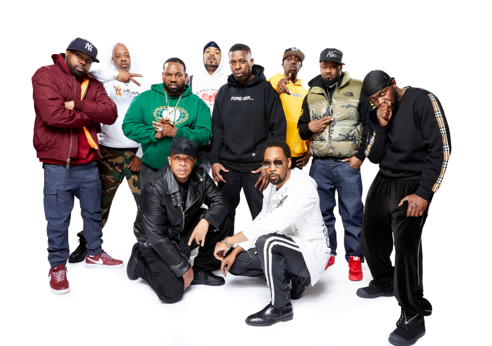
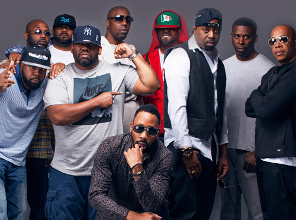
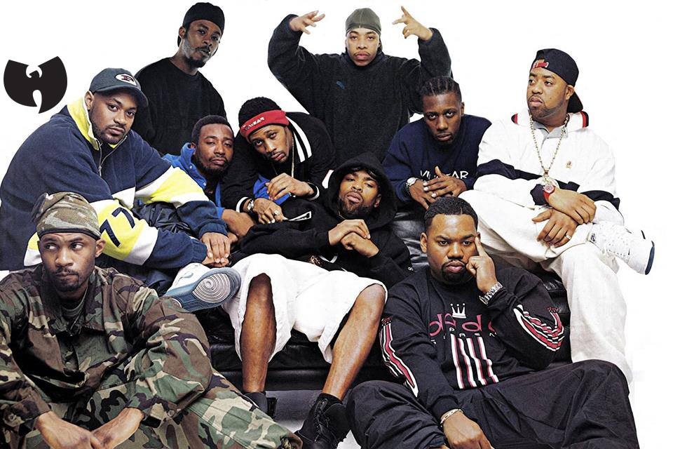

Wu-Tang Clan Family!
Wu-Tang Clan is a American hip hop group and collective formed in the New York City borough of Staten island in 1992, originally composed of rapper-producer RZA and rappers GZA, Ol'Dirty Bastard, Method Man, Raekwon, Ghostface Killah, Inspectah Deck, u-God and Masta Killa. An important act in the East Coast and hardcore hip hop styles. Wu-Tang Clan are regarded as one of the most influential hip hop groups of all time. Their 1993 debut album. Enter the Wu-Tang (36 Chambers), is considered one of the greatest hip hop albums of all time.



Wu-Tang Clan has released four gold and platinum studio albums. The group has introduced and launched teh careers of a number of affiliated artists and groups, collectively known as the Wu-Tang Killa Bees. In 2008, About ranked them the No.1 greatest hip hop group of all time. Kris Ex of Rolling Stones called Wu-Tang Clan "the best rap group ever". In 2004 NME hailed them as one of the most influential groups of the ten years.